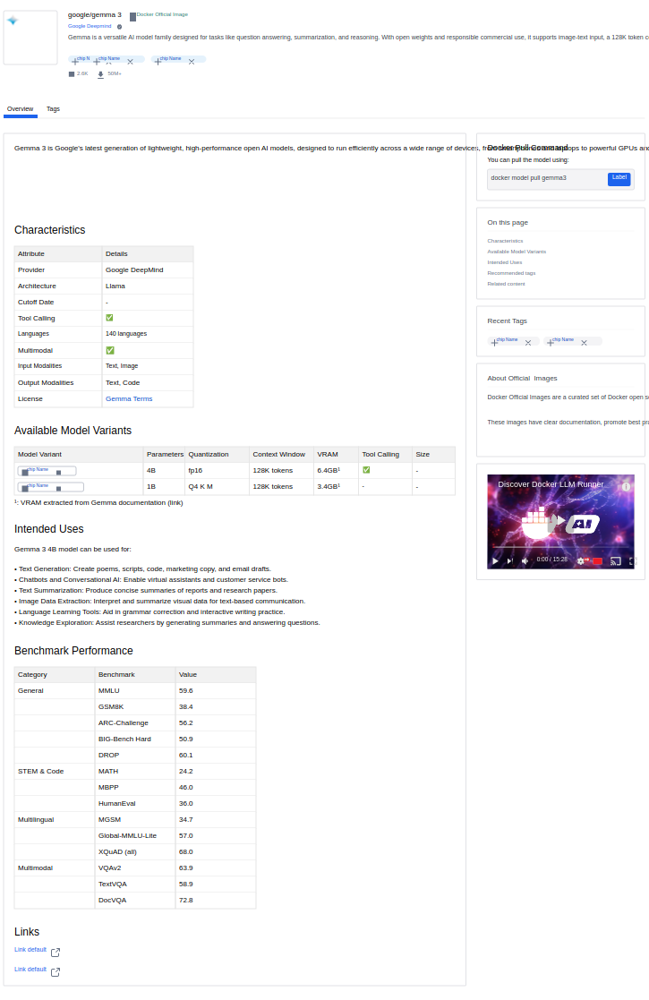
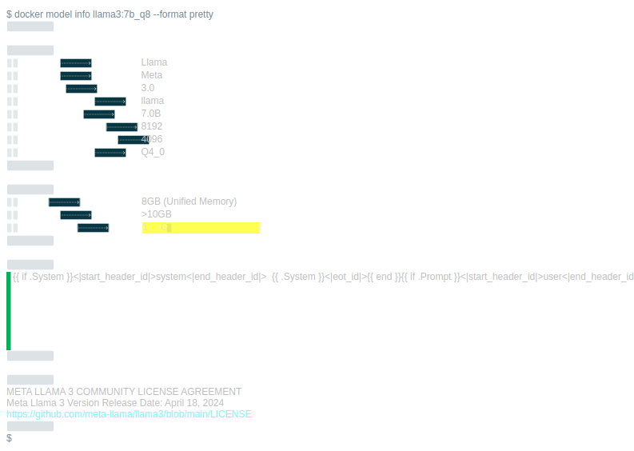

Local inference 0→1, with the coded model cards that help developers pick the right model.
Docker · Design lead + front-end (model cards)2025
Ana · Priya · Sampick-right-model · agent eng · newcomer
Context
Developers wanted to run LLMs locally through Docker, but local inference had no first-class UX, and with ~18K models on Hub, choosing was overwhelming: size, quantization, task fit and hardware needs were opaque. A wrong pick wastes a big download and erodes trust.
Research
Hub hosted ~18K models, but choosing one was guesswork: size, quantization, context window, VRAM needs and task fit were buried in READMEs. Pull telemetry showed heavy trial-and-error, and interviews with Ana and Sam confirmed the cost: a wrong pick means a multi-gigabyte download, a failed run, and lost trust in local inference.
The baseline question for the project: what is the minimum honest information that makes the download decision feel safe?
Conceptualization
Two concepts carried the work. First, the model card as decision surface: a comparable table of variants (parameters, quantization, context, VRAM, tool calling) plus characteristics and benchmarks, designed and coded directly in docker/model-cards. Second, the AI Model Flow: task-first questions that narrow 18K models to a shortlist, for users who don't know what they don't know.
The trade-off: exposing more attributes helps comparison but raises cognitive load. The card answers for people who know what they want; the flow answers for people who don't.
UX use cases
Each card defines the job, the design response, the objective, the measured outcome, and the trade-off made.
Hub model cards (designed and coded in docker/model-cards) exposing size, quantization and task fit; comparable at a glance.
“Find a model that fits my task and my hardware”
Objective
Make the commit decision (which model to download) cheap and reversible-looking.
Outcome
Discovery spread across ~18,200 distinct models with ~2.1M total pulls; top cards (nomic-embed-text ~313K, Qwen2.5-Coder ~304K, gemma3 ~170K) show varied picks, not one default.
Trade-off
More exposed attributes mean denser cards and cognitive load, traded against trial-and-error downloads.
CLI inference UX aligned to the pull/run mental model.
“Pull and run a model like any image”
Objective
Reuse Docker's oldest promise so local AI needs no new concepts.
Outcome
~91.5K distinct users and ~124.2K Desktop instances ran models through the familiar loop.
Trade-off
Treating models as images hides inference-specific needs (VRAM, context length), compensated in the cards.
Model Runner UI: list, pull, run, delete without leaving the GUI.
“Manage local models inside Desktop”
Objective
Give GUI-first developers (Sam) a safe home for what starts as a CLI experiment.
Outcome
Peak ~10,085 monthly active model users (Apr 2026).
Trade-off
Desktop surface area grows; accepted to keep inference discoverable next to containers.
AI Model Flow selector: task-first questions narrowing to concrete candidates.
“Decide between similar models without guessing”
Objective
Convert overwhelming choice into a shortlist.
Outcome
Part of the pull spread above; the selector repo and Miro documented for handoff continuity.
Trade-off
A guided flow slows expert users, who keep the raw catalog as the escape hatch.
Success was measured as decision quality, not just volume: pull spread across distinct models (~18.2K pulled), repeat-pull behavior, and Desktop model users over time (peak ~10,085 monthly). A healthy long tail with varied top cards indicates the cards and flow are actually helping people choose.
~2.1Mmodel pulls since launch (Feb 2025)
~18.2Kdistinct models pulled
~91.5Kdistinct users
~10,085peak monthly model users
Code-level authorship of docker/model-cards evidenced from Slack/Notion, not public GitHub (internal repos inaccessible). Sigma: PRES_PRODUCT__DESKTOP_MODEL_RUNNER_PULLS_DAILY.
Reflection
The card outgrew its container: it became the reference layout for model metadata across Hub. Good decision surfaces keep working after the launch party ends.
Design screens
Exported from the original Figma files with figx.

Hub model card: characteristics, variants with VRAM, benchmarks (shipped)

docker model info with hardware-fit output (CLI UX)